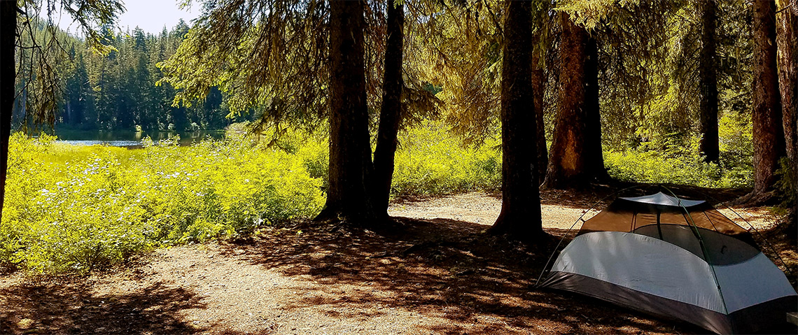

About Me

I recently completed my PhD in Robotics at Oregon State University, working in the Robotic Decision Making Laboratory under Dr. Geoffrey Hollinger. Prior to attending OSU, I earned my BS and MSE in Electrical Engineering from Washington State University and Mercer University, respectively. I have several years experience working as an Electronics Engineer for the United States Air Force and a Computer Vision Contractor for Invy Technology.
My recent work focuses on a structured approach to addressing challenges in robotic state estimation by augmenting deep learning techniques with state-of-the-art tools (e.g., optimization methods, physics based models, human expertise). The systems created in this manner leverage the strengths of these tools while increasing performance via domain tailored deep networks, allowing for more intuitive training and validation than fully end-to-end deep networks. My previous work has included automated facial feature extraction, facial emotion categorization, and American Sign Language recognition. My current research interests include deep learning and explainable AI; specifically how these can improve robotic perception, human-robot interaction, and natural language processing.
Education
Oregon State University, Corvallis, OR
PhD, Robotics
Mercer University, Macon, GA
MSE, Electrical Engineering
Washington State University, Pullman, WA
BS, Electrical Engineering
Minor, Mathematics
Professional
Oregon State University, Corvallis, OR
Graduate Research Assistant
Graduate Teaching Assistant
Invy Technology, Macon, GA
Computer Vision Contractor
Robins Air Force Base, Warner Robins, GA
Electronics Engineer
Publications
Journal Articles
- G. Olson, S. Chow, A. Nicolai, C. Branyan, G. Hollinger and Y. Menguc, "A generalizable equilibrium model for bending soft arms with longitudinal actuators," International Journal of Robotics Research, DOI:10.1177/0278364919880259, Oct. 2019.
- N. Lawrance, R. DeBortoli, D. Jones, S. McCammon, L. Milliken, A. Nicolai, T. Somers and G. Hollinger, "Shared autonomy for low-cost underwater vehicles," Journal of Field Robotics, vol. 36, no. 3, pp. 495-516, May 2019.
- A. Nicolai and G. Hollinger, "Denoising autoencoders for laser-based scan registration," Robotics and Automation Letters, vol. 3, no. 4, pp. 4391-4398, Oct. 2018.
Refereed Conference Papers
*authors contributed equally
- A. Nicolai, G. Olson, Y. Menguc, and G. Hollinger, "Learning to control reconfigurable staged soft arms," in Proc. IEEE International Conference on Robotics and Automation (ICRA), Paris, France, May 2020.
- R. DeBortoli*, A. Nicolai*, F. Li, and G. Hollinger, "Real-time underwater 3D reconstruction using global context and active labeling," in Proc. IEEE International Conference on Robotics and Automation (ICRA), Brisbane, Australia, May 2018, pp. 6204-6211.
- C. Eriksen, A. Nicolai, and W. Smart, "Learning object classifiers with limited human supervision on a physical robot," in Proc. IEEE International Conference on Robotic Computing (IRC), Laguna Hills, CA, Jan. 2018, pp. 282-287.
- C. Fleming, S. Walker, C. Branyan, A. Nicolai, G. Hollinger, and Y. Menguc, "Toolpath planning for continuous extrusion additive manufacturing," in Proc. International Conference on Shape, Solid, Structure and Physical Convention (S3PM), Berkeley, CA, June 2017.
- A. Nicolai and A. Choi, "Facial emotion recognition using fuzzy systems," in Proc. IEEE International Conference on Systems, Man, and Cybernetics (SMC), Kowloon, Oct. 2015, pp. 2216-2221.
Refereed Workshop Papers
- R. DeBortoli, A. Nicolai, F. Li, and G. Hollinger, "Assessing perception quality in sonar images using global context," in Proc. IEEE International Conference on Intelligent Robots and Systems Workshop on Introspective Methods for Reliable Autonomy (IROS), Vancouver, Canada, Sept. 2017.
- A. Nicolai, R. Skeele, C. Eriksen, and G. Hollinger, "Deep learning for laser based odometry estimation," in Proc. Robotics: Science and Systems Conference Workshop on Limits and Potentials of Deep Learning in Robotics (RSS), Ann Arbor, MI, June 2016.
Contact